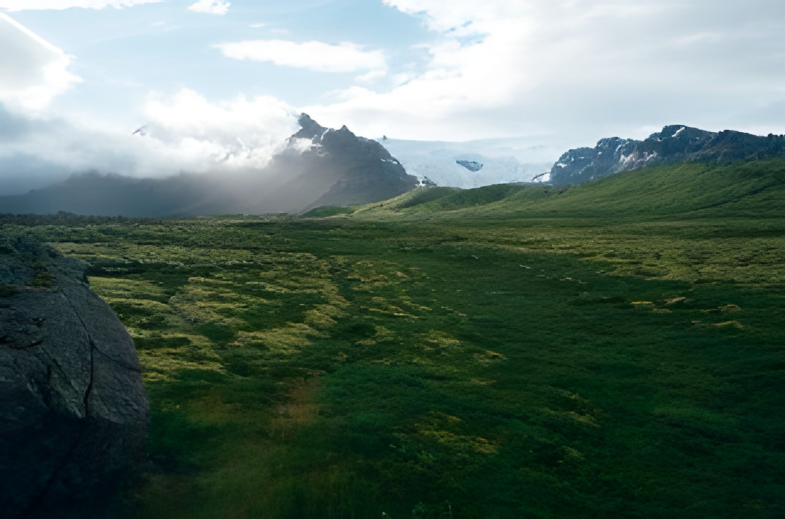
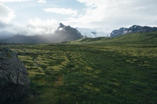
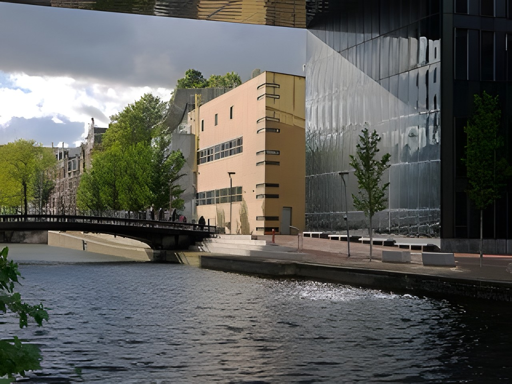

HDify
Make photos sharper and bigger. Runs on your device, nothing is uploaded.
See what it can do
Each photo below was shrunk to a quarter of its size, then enhanced 4× by HDify. Drag to compare, or try it yourself.


BeforeAfter
BeforeAfterExample photos are public domain (CC0). Credits
Free AI photo enhancer that never uploads your photos
HDify upscales low-resolution photos to HD or 4K using the Real-ESRGAN super-resolution model, and can restore faces with RestoreFormer++. It runs entirely in your browser on your GPU through WebGPU, so there is no server, no sign-up and no limit.
Private
Your photos stay on your device. Nothing is uploaded or stored.
Fast
WebGPU acceleration enhances photos in seconds on a modern laptop or desktop.
Open source
MIT licensed. Read the code or contribute on GitHub.
Frequently asked questions
Is HDify free?
Yes. It is free and open source, with no sign-up and no limits.
Are my photos uploaded anywhere?
No. Enhancement runs on your own device. Only the 67 MB model file downloads, once, and is cached by your browser.
How does it upscale photos?
It runs the Real-ESRGAN model through ONNX Runtime Web on your GPU, tile by tile, then stitches the tiles back together.
Can it restore faces?
Yes. Leave "Restore faces" on and HDify finds faces, rebuilds them with the RestoreFormer++ model and blends them back in. The face model (about 71 MB) only downloads if a face is found.
Which browsers work?
Chrome and Edge 113+, and Safari 26+. Other browsers fall back to the CPU, which is much slower.